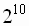
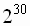
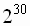
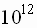
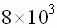
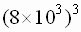
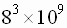
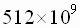
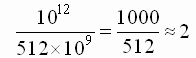

Раздел 2. Информация в компьютере
1. Некоторые термины
Термин информация имеет множество определений. В “Энциклопедии кибернетики” говорится, что “Информация – одно из наиболее общих понятий, обозначающее некоторые сведения, совокупность каких-либо данных, знаний и т.п.”. В широком смысле “информация” – это отображение реального мира; в узком смысле – это любые сведения, являющиеся объектом хранения, передачи и преобразования.
Информация может быть непрерывной (аналоговой), источником которой обычно являются различные природные объекты (температура, давление, влажность воздуха, звук), объекты технологических производственных процессов. Но бывает и дискретный характер информационных сообщений (падение метеорита, извержение вулкана, передача сообщений азбукой Морзе).
В современном мире информация, как правило, обрабатывается на компьютерах. Т.е. информация тесно связана с инструментарием–компьютером. И так как информация может быть разной природы, следовательно, и Вычислительные Машины (синоним слова “компьютер”) так же делятся аналоговые и цифровые. Аналоговые ВМ оперируют с информацией, представленной в виде непрерывных изменений некоторых физических величин (сила тока, скорость и т.д.). В силу своего устройства АВМ является узкоспециализированным. Цифровые ВМ оперируют с информацией, представленной в дискретном виде. Частный случай ЦВМ – ЭВМ. В них для представления дискретной информации используется алфавитный способ, основанный на использовании фиксированного конечного набора символов любой природы, называемого алфавитом. Символы из этого алфавита называются буквами, а любая конечная последовательность букв – словом. При этом не требуется, чтобы слово имело языковое смысловое значение.
Очень широко используется ещё один термин – “данные”. Этот термин принято применять в отношении информации, представленной в виде, позволяющем хранить, передавать или преобразовывать её с помощью технических средств. В этом случае говорят: “ввод, обработка, хранение данных”.
2. Единицы измерения информации
Вопросы и задачи для самопроверкиМы все прекрасно знаем, что современный компьютер может обрабатывать информацию, представленную в самом различном виде: тексты, числа, рисунки, звук. Но так как компьютер – это ЭВМ, следовательно, вся вводимая в него информация должна быть представлена в дискретном виде. Каким бы ни был источник информации, всё её “внутреннее” представление сводится к последовательности сигналов “есть ток” и “нет тока”, которые мы условно обозначаем как 0 и 1.
Существует несколько подходов к измерению количества информации. Рассмотрим сначала алфавитный подход, который позволяет определить количество информации, заключённой в тексте.
Бит – минимальная единица измерения информации. Каждый бит может принимать значение 0 или 1. Битом так же называют разряд ячейки памяти ЭВМ.
Каждому символу — буквам, знакам препинания, цифрам (если они рассматриваются именно как символы) и т.п. – компьютер ставит в соответствие уникальную (т.е. не повторяющуюся) последовательность битов, именуемую кодом. Данный процесс называется кодированием, а обратное преобразование (скажем, для вывода информации на экран) — декодированием. Такой набор символов называется алфавитом, а число К — мощностью алфавита.
При этом справедлива такая формула:
| К = 2n — количество различных символов, которое можно закодировать с помощью последовательности из n бит. |
Считается, что один символ из алфавита мощностью К = 2n несет в тексте n бит информации, т.е. его информационный вес i равен n битам.
Тогда объем информации текста из М символов будет равен: V = М x i.
Пример 1. Если n = 8 бит, то мощность алфавита К будет 28 = 256 символов. Поэтому информационный вес одного символа такого алфавита равен 8 битам.
Если же мощность алфавита К = 32 символа, то один символ несет 5 бит информации (32 = 25 => n = 5).
Практика показала, что удобнее всего работать с группами разрядов. Понятие о байте, как о группе взаимосвязанных разрядов, появилось вместе с первыми образцами электронной вычислительной техники. Долгое время оно было машинно-зависимым, т.е. для разных вычислительных машин длина байта была разной. И только в конце 60-х понятие байта стало универсальным и машинно-независимым.
Итак, 1 байт = 8 бит. Для более крупных объёмов используются следующие единицы измерения:
1 Кбайт (килобайт)=  байта = 1024 байта.
1 Мбайт (мегабайт)= 1 Кбайт 1 Кбайт = байт.
1 Гбайт (гигабайт)= 1 Кбайт  1 Мбайт =  байт.
1 Мбайт =  байт.
1 Tбайт (терабайт)= 1 Кбайт  1 Гбайт = байт.
1 Гбайт = байт.
Условно можно считать, что 1Кбайт ≈ 1000 байт. При переходе к более крупным единицам измерения погрешность накапливается (сначала она около 3% − “инженерная погрешность”).
Пример 2. По оценкам учёных ёмкость человеческой памяти ≈ бит. Сколько это будет в более крупных единицах? Будем считать приблизительно, т.е.
1 Кбайт = 1024 8 бит ≈ бит.
1 Гбайт = (1 Кбайт) =  = = бит.
Гбайт.
Кроме уже названных единиц часто встречается ещё машинное слово − 2 байта = 16 бит.
Алфавитный подход к измерению информации является объективным, т.е. он не зависит от субъекта (человека), воспринимающего текст. Однако он никак не оценивает качество информации.
Другой подход к измерению информации называется содержательным. Количество информации, заключённое в сообщении, определяется объёмом знаний, которое несёт это сообщение получающему его человеку. Сообщение содержит информацию для человека, если заключённые в нём сведения являются для этого человека новыми и понятными, и, следовательно, пополняют его знания.
Т.е. сообщение: “человеку надо есть, пить и спать” для большинства из вас не является информацией. Не является информацией и инструкция на китайском языке (опять-таки для большинства русскоязычного населения).
При содержательном подходе возможна качественная оценка информации: полезная, важная, вредная. Однако одну и ту же информацию люди могут оценить по разному. Например, есть люди, понимающие китайский язык. Т.е такой подход не является объективным.
При содержательном подходе единицей измерения также является бит.
Сообщение, уменьшающее неопределённость знаний человека в два раза, несёт для него 1 бит информации.
Пусть в некотором сообщении содержатся сведения о том, что произошло одно из N равновероятных событий (равновероятность означает, что ни одно событие не имеет преимуществ перед другими). Тогда количество информации, заключённое в сообщении, –X бит – и число N связаны формулой:
2x =N.
Тогда x =log2N. Если N является степенью двойки, такое уравнение легко решается “в уме”.
Пример 3.
- Будет сегодня дождь или нет? Ответ − 1 бит информации.
- Будет сегодня дождь, снег, град или осадков не будет? Ответ несёт 2 бита информации.
Существуют и другие подходы к измерению информации.
Вопросы и задачи для самопроверки
- Молекула ДНК человека состоит примерно из 3*10 9 пар нуклеотидов. При этом нуклеотидов только 4 вида, т.е. язык генетических записей четырёх буквенный. Сколько всего информации содержится в ДНК?
- Энциклопедический словарь имеет 1590 страниц; на каждой странице помещается 100 строк по 105 символов в строке. Каков объём информации в такой книге, если каждый символ – это “буква” генетического алфавита? Сколько таких книг нужно, чтобы записать геном человека?
- Информационное сообщение объёмом 1,5 Кб содержит 3072 символа. Сколько символов в алфавите, при помощи которого было записано это сообщение?
- Книга имеет 320 страниц; на каждой странице помещается 48 строк по 56 символов в строке.
- Какой объём имеет оперативная память компьютера, если 3FF – шестнадцатиричный адрес последнего байта оперативной памяти?
- Компьютер имеет оперативную память объёмом 1 Кбайт и содержит 512 машинных слов. Указать адрес последнего машинного слова оперативной памяти (в шестнадцатиричном виде).
- Сведения о сотруднике хранятся в виде строки из 2048 символов. На каком количестве дискет ёмкостью 1,2 Мб поместятся сведения обо всех 8192 сотрудниках?
- Свободный объём оперативной памяти 640 Кбайт. Сколько страниц книги поместится в ней, если на странице:
1) каков объём информации в этой книге;
2) сколько таких книг нужно, чтобы в них содержался 1 Тб информации.
— 32 строки по 64 символа в строке;
— строки по 64 символа в строке;
— 16 строк по 64 символа в строке;